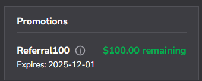
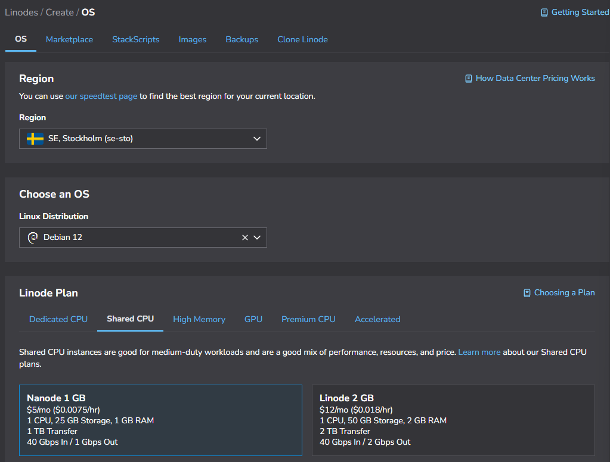
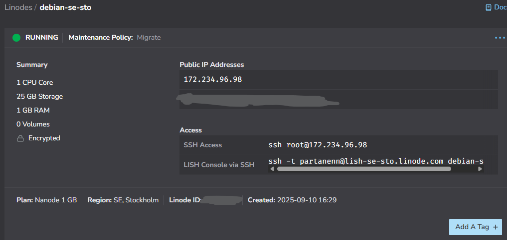
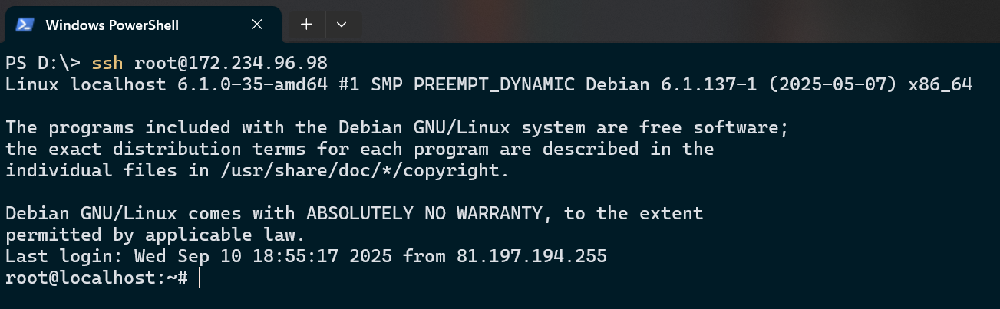
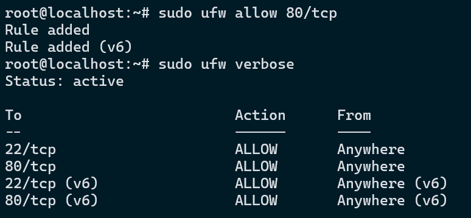
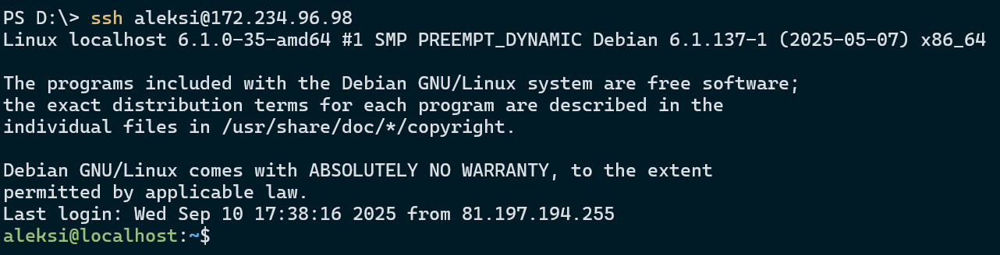
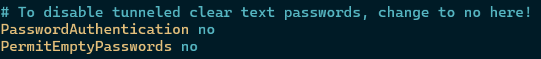
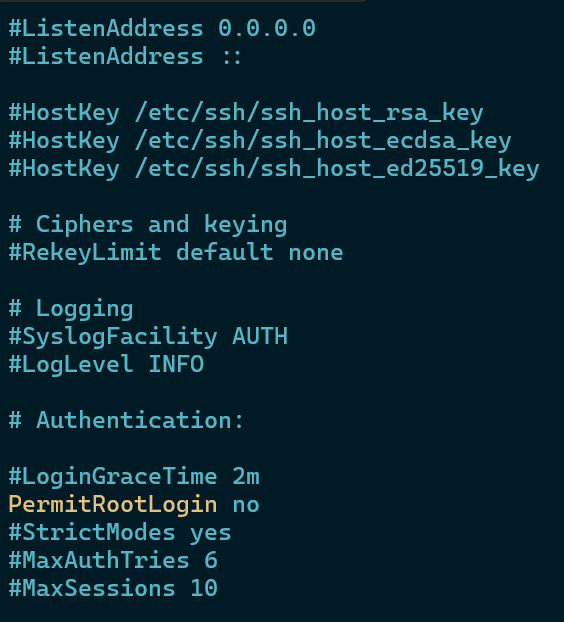
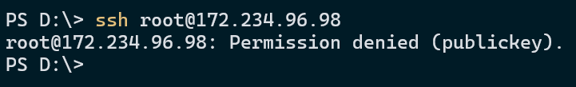
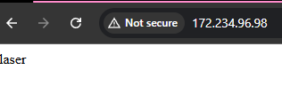

Harjoitus 4: Hello Web Server
x) Lue ja tiivistä
Susanna Lehdon raportti(Lehto 14.2.2022)
- Kurssille kannattaa valita halvin palvelimen tarjoaja.
- Muista laittaa hälytykset päälle ettei palvelin jää pyörimään kurssin jälkeen
- Palomuuria varten asenna ufw paketti.
- Avaa portti 22 ja laita palomuuri tämän jälkeen päälle.
- Lisää palvelimelle käyttäjä ryhmään sudo.
- Asenna apache2 sekä avaa portti 80 palomuurista
Tero Karvinen Ohjeet (Karvinen 19.9.2017)
- DigitalOcean ja NameCheap ovat ollee käytössä tässäkin.
- On olemassa myös mm. Linode
- sudo usermod --lock root poistaa vain salasanan käytön mahdollisuuden käyttäjältä
a) Vuokraa oma virtuaalipalvelin
Päätin ottaa virtuaalipalvelimen Linodelta, koska kurssin verkkosivuilla opettajalta löytyi referal linkki kyseiselle sivustolle. Kirjautumisen yhteydessä piti lisätä pankkikortti tilille. Kirjautumisen jälkeen Billing sivulla näkyi $100 Promotions kohdassa. Sivustolle kirjautuminen kävi helposti.
Seuraavaksi halusin luoda virtuaalipalvelimen. Vasemmasta sivupalkista valitsin Compute -> Linodes. Linode kutsuu heidän virtuaalipalvelimia nimellä Linode. Valitsin Regioniksi Tukholman ja käyttöjärjestelmäksi Debian 12. Uskon, että 1GB RAM muistia, 1 CPU sekä 25 GB tallennustilaa. Lisäsin myös julkisen avaimeni SSH Keys kohtaan, mutta huomasin ettei se toiminut ja se piti lisätä myöhemmin palvelimelta käsin.
Painoin sivun alhaalta Create Linode, josta pääsin virtuaalipalvelimen omalle hallinta sivulle. Sivun vasemmassa yläkulmassa luki Provisioning ja odotin että se muuttui muotoon Running.
b) Tee alkutoimet virtuaalipalvelimella, Tulimuuri päälle, root-tunnus kiinni, ohjelmien päivitys
Otin yhteyden palvelimeen powershell:lla käyttäen ssh:ta.
Asensin palvelimelle palomuuri sovelluksen ufw komennolla sudo apt-get install ufw. Tämän jälkeen avasin ssh portin 22 sekä 80 ja laitoin palomuurin päälle komenolla sudo ufw enable.
Lisäsin uuden käyttäjän palvelimelle. Käytin komentoa sudo adduser aleksi. Lisäsin itseni myös sudo ryhmään komennolla sudo adduser aleksi sudo ja kokeilin kirjautua palvelimelle tunnuksella. Kirjautuminen onnistui.
Tässä vaiheessa lisäsin kotikoneeni julkisen SSH avaimen käyttäjäni .ssh/authorized_keys tiedostoon. Kokeilin kirjautua ulos palvelimelta ja takaisin sisään. Tällä kertaa palvelin ei pyytänyt salasanaa. Nyt voin mennä root käyttäjälle ja muokata /etc/ssh/sshd_config tiedostosta palvelimen ssh asetuksia. Laitan sekä PermitRootLogin että PasswordAuthentication asetukset pois päältä.
 Nyt yrittäessäni kirjautua sisään root käyttäjällä, saan alla näkyvän Permission denied viestin. Pääsen kuitenkin vielä normaalisti sisälle aleksi käyttäjällä. Päivitän vielä lopuksi ohjelmat palvelimelta komennooilla update, upgrade ja dist-upgrade.
c) Asenna weppipalvelin
Asensin Apache2 paketin komennolla sudo apt-get install apache2. Tämän jälkeen kokeilin ottaa yhteyttä palvelimeen selaimen kautta ja sain näkyviin apachen default sivun. Vaihdoin default sivun tiedoston /var/www/html/index.html sisällön näyttämään vain tekstin laser. Palvelin toimii nyt hienosti.
Tehtävänanto
h4 Maailma kuulee (Karvinen 2025)Lähteet
- Karvinen, T. 19.9.2017. First Steps on a New Virtual Private Server. Tero Karvinen. Luettavissa: https://terokarvinen.com/2017/first-steps-on-a-new-virtual-private-server-an-example-on-digitalocean//. Luettu: 10.9.2025.
- Karvinen, T. 2025. Linux Palvelimet. Tero Karvinen. Luettavissa: https://terokarvinen.com/linux-palvelimet/#h4-maailma-kuulee. Luettu: 10.9.2025.
- Lehto, S. 14.2.2022. Teoriasta käytäntöön pilvipalvelimen avulla (h4). Susanna Lehto. Luettavissa: https://susannalehto.fi/2022/teoriasta-kaytantoon-pilvipalvelimen-avulla-h4/. Luettu: 10.9.2025.